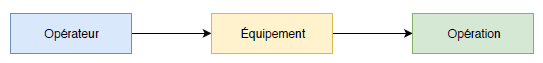
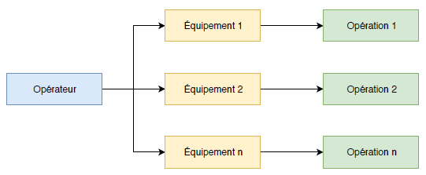
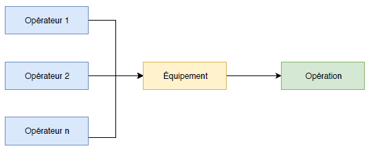
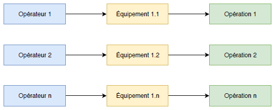
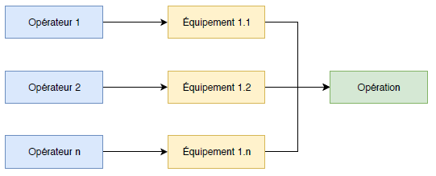
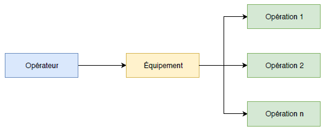
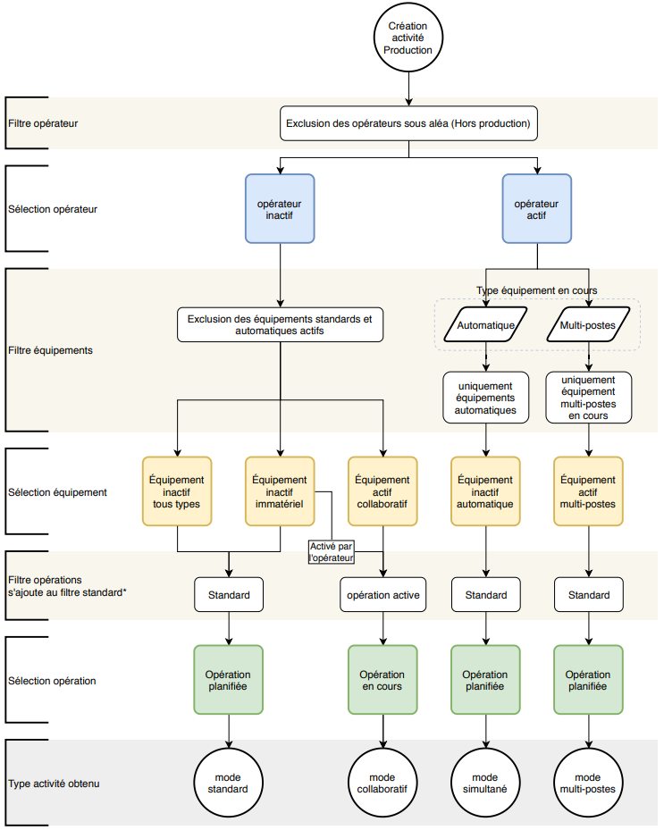

Cas de création d'activités
Plusieurs situations
le cas standard de création d'activité est le suivant :
un opérateur -- (utilise) -- un équipement -- (pour réaliser) -- une opération

dans ce cas l'équipement utilisé n'est plus disponible pour un autre opérateur et l'opération de production non plus.
conditions de création
- sélection de l'opérateur libre (pas d'activités en cours)
- sélection d'un équipement disponible (pas d'activités en cours)
- sélection d'une opération planifiée sur l'équipement
il existe plusieurs alternatives au comportement standard décrites ci-après.
Les équipements "automatiques"
Ces équipements peuvent fonctionner sans la présence de l'opérateur ou avec une présence réduite libérant ainsi l'opérateur pour la réalisation d'autres travaux.
Dans cette situation l'opérateur peut déclarer une opération différente sur plusieurs équipements.
Le temps opérateur est alors réparti sur chaque opération en fonction du nombre d'équipements utilisés simultanément.

conditions de création
- sélection d'un opérateur actif (activités en cours)
- sélection d'un équipement disponible (fonctionnement automatique autorisé)
- sélection d'une opération planifiée sur l'équipement concerné
Le mode collaboratif
Dans ce mode, plusieurs opérateurs peuvent utiliser le même équipement pour réaliser une même opération.

conditions de création:
- sélection de l'opérateur
- sélection de l'équipement (indicateur d'activité en cours actif), l'équipement n'est pas un équipement immatériel (une seule instance disponible)
- ne proposer que l'opération en cours sur l'équipement sélectionné
Les équipements immatériels
Il s'agit des équipements qui n'ont pas d'existence physique (Typiquement les postes de contrôle).
Dans ce mode, plusieurs utilisateurs peuvent utiliser une instance de l'équipement concerné pour réaliser des opérations différents.

il est aussi possible d'utiliser des équipements immatériels en mode collaboratif.
Dans ce cas, plusieurs opérateurs utilisent une instance de l'équipement concerné pour réaliser la même opération

conditions de création
- sélection de l'opérateur
- sélection d'un équipement en cours d'utilisation (équipement immatériel)
- liste des opérations
- cas 1 : sélection d'une opération dans la liste des opérations libres
- cas 2 : basculer en collaboratif, (cliquer sur le bouton "Collaboratif", affiche les opérations en cours sur ce type d'équipement)
le mode multi-postes (ou opérations imbriquées)
Dans ce mode un opérateur utilise un équipement pour réaliser plusieurs opérations simultanément.

conditions de création
- sélection de l'opérateur
- sélection d'un équipement déjà actif (équipement multi-postes)
- sélection d'une opération
Arbre de création des activités de production
le schéma ci-dessous décrit les filtres et options disponibles lors de la création d'activités de production

Créé avec HelpNDoc Personal Edition: Environnement de création d'aide complet